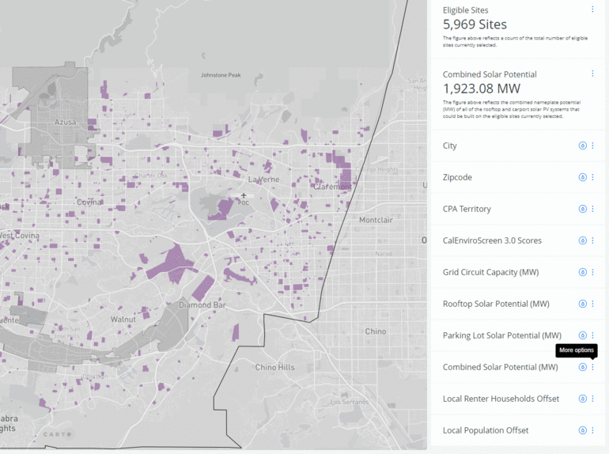

Where are opportunities to install community solar and resilience centers?
Find eligible sites for community solar and resilience center projects in your local area with the map tool below. Eligible sites are publicly owned or community oriented institutional facilities with existing buildings. These sites may also have parking lots.
The widgets panel on the right side of the map contains a filter pane which allows you to restrict the locations which are currently in view based on criteria important to your solar installation site. The service territories for LADWP and other Los Angeles County municipal electric utilities are currently grayed out because key data inputs about the locations and solar PV integration capacities of their distribution circuits were unavailable.
Please note that the map is best experienced on a desktop PC with the browser window maximized.
Get Started:
- There are two ways to focus the map on your city of interest. The first is to just use the search bar, located in the top left corner of the map, to type in your city and hit "Enter." This will zoom you into the city of interest and add a pin.
- If you want to actually create a new selection, which restricts the sites within view to just those which are located in a specific city, the requires using the filter panel on the right of the map. First, select the filter panel, then go to the first dropdown window and select the name of a city (or cities) of interest from the list. This will cause only the sites within that city to be shown, eliminating all others from view in the map.
Once the sites within your city have been selected within the map, all of other filters will be only be applied to the sites in this selection. Because filters are added cumulatively, making a selection in an additional filter will further refine the previous set of selected sites.
To clear this selection, click the city selection dropdown menu and either de-select all checked cities or click on the small trashcan icon at the bottom right of the pane.
 Click on image to view larger size
Click on image to view larger size - Navigate to the Legend panel and click the check box next to the layer labeled "Census Tracts by CES-4.0 Disadvantaged Community Status." This layer is provided as an overview of the DAC Census Tracts in Los Angeles County. (Note: This layer is provided for context and does not need to be turned on to perform the site filtering procedure described in the following)
- Next, navigate to the filter panel and locate the "CES-4.0 Percentile Scores" filter. This filter selects eligible sites based upon a minimum threshold for the CalEnviroscreen 4.0 percentile score of the census tract in which it is located.
- Input a minimum threshold value in the text box provided. Census tracts with CES percentile scores of 75 and above are technically designated as Disadvantaged Communities (DACs). You will see that after inputting a value of 75 the eligible sites which are selected now overlap with the DAC Census Tract layer available in the legend. However, other values could also be input as well.
To clear this selection, delete minimum theshold value that was input to the text box within the CES-4.0 Percentile Scores filter.

There are two filters available for selecting sites by their usetype categorization.
- General Usetype. Options: Institutional, Government, Educational, Miscellaneous, Recreational.
- Detailed Usetype. Specific usetypes provided in the dropdown list (i.e., Elementary Schools, Churches, etc.)
To make use of either of these filters:
- Navigate to the filter panel and located your preferred usetype filter. This will create a selection of eligible sites based on the Parcel Use Type you select.
- It is possible to check multiple usetype categories simultaneously to create a composite selection.
- If a primary usetype is selected, only secondary usetypes within that category will be available for more detailed filtering.
- Secondary usetypes can ALSO be selected directly, without choosing a primary usetype, thereby allowing for a composite selection across multiple primary categories.
To clear this selection, uncheck all of the usetype categories which were selected in the dropdown pane or click on the small trashcan icon at the bottom right corner of the pane.
- Go to the filter panel and navigate to the "CPA Territory" filter.
- Eligible sites are divided into two categories: true (1) where the site is located within CPA territory, and false (0) where it is outside CPA territory.
- Select "1" to create a new select which consists of eligible sites that are located within the CPA territory. Using additional filters will further refine the set of eligible sites within view from this selection.
To clear this selection, unchech the "1" in the CPA filter click on the small trashcan icon at the bottom right of the pane.

Our suggestion is to keep track of sites based on their unique Site ID numbers.
- You have already found a site that you would like to quickly relocate.
-
Click on the site to view the pop-up and locate Site ID, listed first.
We suggest keeping a list of Site ID's for eligible sites you are considering. - To view only this site on the map, use the "Site ID" filter.
- Navigate to the filter panel and located the Site ID filter. In the text box provide input the numerical value for the site that you are interested in.
The map will create a new selection with just this individual site and zoom to its extents automatically.

- Select the filter panel and nagivate to the Combined Solar Potential (MW) filter.
- There are two text boxes which allow you to input lower and upper threshold limits on the Combined solar potential of the sites that are to be selected within the map. The Combined solar potential represents the combination of rooftop and parking lot solar potential (MW).
- Input values for the size of solar PV systems that you are interested in. These values must be numeric and can range from 0 on the low end to any value on the high end.
- Now, only eligible sites with a combined solar potential within the range you have set are available. Using additional filters will further refine your selected sites.
To clear this selection, delete both the upper and lower range values which were input to the Combined Solar Potential filter.
The capacity of local distribution circuits to accommodate new solar PV systems is an important siting consideration. There are two measures of grid distribution circuit capcity that are provided in the tool. The first, which is based upon the Rule-21 15% Penetration capacity of the circuits, tells you the upper limit (MW) for a behind the meter system (i.e. for a resilience center) that could likely be interconnected to a given circuit without the need for a detailed study or infrastructure capacity upgrades. The second, which is based upon SCE's integrated capacity assessement (ICA), tells you the upper limit (MVA)** for an in front of the meter (IFOM) system that could be interconnected to support the development of a community solar program, for instance.
** Note that the units associated with this value are expressed in megavolt-amperes (MVA), instead of megawatts (MW). For purposes of this tool and site planning, it can be assumed that this value is equivalent to MW when comparing it to the size of a prospective solar PV installation. This is equivalent to assuming a power factor of unity and thus, implies that any potential issues related to reactive power would be addressed indepedently of the eligible site's system design.
The actual size of an installed system could potentially exceed these capacity thresholds. However, it is likely that the developer would need to work with the utility to understand the potential impacts as well as, potentially, pay a fee to support required distribution system capacity upgrades.
These grid capacity metrics can be used as filters for prospective sites to understand which sites are located in areas where local distribution circuit capacities are limited and thus, grid interconnections may be more difficult/expensive for either in front or behind the meter (BTM) projects.
This type of filtering is useful if there is a definite minimum size for the solar installation you want to install, and you want to be sure there is grid capacity to interconnect. However, if you have more flexibility on the size of the installation, or if you are focused on a particular neighborhood, you may want to check grid capacity on a site-by-site basis after using other filters.”
- Select the filer panel and navigate to the BTM Grid Circuit Capacity filer
- The are two text boxes which allow you to input lower and upper threshold limits on the BTM capacity of sites that are to be selected within the map.
- Once you input a valid set of numeric values, sites that are associated with circuits whose BTM capacities are within the prescribed range will be selected on the map. Other filters can be applied to additionally narrow your site selection.
To clear this selection, delete both the upper and lower range values which were input to the BTM grid capacity filter.

- Navigate to the filter panel and located the "Combined Residential Usage Offset (Persons)" filter.
- Two text boxes allow you to input lower and upper threshold values for the desired number of people whose annual electricity usage a site's combined solar potential could potentially offset.
- Input a valid set of numerical values within the two text boxes provide. This will cause only the sites capable of offsetting the average annual energy usage of this many local persons to be selected in the map.
- Using additional filters will further refine your selected sites.
To clear this selection, delete the values which you input into the two text boxes associated with the Combined Residential Usage Offset (Persons) filter.

- Navigate to the layers panel and locate the "Census Tract Groups by Average Annual Electricity Usage (kWh/year) Per Renter Household" layer. This layer is based upon UCLA Energy Atlas residential consumption data and has been provided to give an overview of the variation in average annual electricity consumption rates across different regions within Los Angeles County. (Note: This layer is provided for context and does not need to be turned on to enable the site filtering procedure described in the following)
- Navigate to the filter panel and locate the "Combined Residential Usage Offset (Renter Occupied Households)" filter. This filter allows you to select eligible sites based a lower and upper range of values for the number of local renter households whose average annual electricity usage could be offset by the estimated out of a site's combined solar PV potential.
- Input a set of valid numeric values for the lower and upper range on the number of renter households whose usage could potentially be offset.
- Now, only eligible sites whose output could offset the usage of this desired range of renter households will be selected within the map. Using additional filters will further refine your selected sites.
To clear this selection, delete the values which you input into the two text boxes associated with the Combined Residential Usage Offset (Renter Occupied Households) filter.
The location of Brownfield and Superfund sites are available as a set of point layers within the map.
- Navigate to the layers panel and select the "USEPA Brownfield Sites by Status" from the layer list.
- Brownfield sites are color coded according to their current activity status as described in the legend panel.
Full Eligible Sites Dataset
Choose to download Excel, CSV, or Shapefile formatted versions of the underlying data set that is associated with Eligible Sites layer depicted on the map. Our suggestion, if you would like data for a few sites, is to write down the Site ID value (found by clicking on a site on the map). Use the Excel file to match the Site ID(s) of interest. This document includes metadata.
Another option for accessing tabular data for a restricted set of sites is to use the attribute table viewer functionality of the map. Once a selection has been created, either by using the filtering panel or by zooming into a specific area of interest, click the small grey arrow on the bottom of the map to bring up the attribute table viewer. There are options within this viewer tool for extracting the attributes for a restricted group of selected sites to be exported as a CSV table for subsequent analysis.
The metadata excel file includes more detailed column names and descriptions.